„Légy olyan, mint a virág, fordítsd arcod a nap felé.” — Halíl Dzsibrán
Top 3 legnépszerűbb virág(2023-ban):
Rózsa:
A rózsa az egyik legikonikusabb és legismertebb virág a világon. Szépsége, illata és különböző színváltozatai miatt számos kultúrában és eseményen széles körben használják. A rózsa általában a szerelem és az érzelmek kifejezésének szimbóluma.
Tulipán:
A tulipánok a tavaszi virágok közé tartoznak, és a Hollandiában rendezett híres virágkiállítás, a "Tulipánfesztivál" miatt is híresek. Szépségük és sokféle színváltozatuk miatt a tulipánok szintén népszerűek világszerte.
Liliom:
A liliomok elegáns és szépséges virágok, amelyek különböző színekben és formákban találhatók. Szimbolizálhatják a tisztaságot, az ártatlanságot és a boldogságot. A liliomok szintén népszerűek esküvői csokrokban és dekorációkban.
Virágnyelv
Virágnyelv - a virágok szimbolikája
Az emberek már szinte az ősidőktől ajándékoznak egymásnak virágot a vágy, a hűség és a szeretet jelképeként. A virágok egyben szimbólumok is: fajtáik, színeik gondolatokat, érzéseket fejezhetnek ki.
Tulipán
Tökéletes szeretőt, hírnevet, természetességet, játékosságot, vidámságot jelképez.
Bazsarózsa
A félénkség, boldog élet, boldog házasság, egészség, jólét virága. A házasság tizenkettedik évfordulójának kísérője.
Jácint
A kék jácint az állandóság, a piros és a rózsaszínű a játékosság jelképe. Ajándékozzon fehér jácintot, ha az ajándékozott szépségét szeretné kifejezni és sárgát, ha a féltékenységét. A lila jácint a bánat jelképe.
Kardvirág
A fennséges és méltóságos kardvirág a hűség, a becsület és a szilárd jellem jelképe.
Krizantém
A krizantém az optimizmus, a hűség és a hosszú élet szimbóluma.
A piros krizantém szerelmet jelent.
A sárga krizantém elvesztegetett szerelmi esélyt jelent.
A fehér krizantém az odaadás szimbóluma.
1.Nárcisz
gfhdfhgh
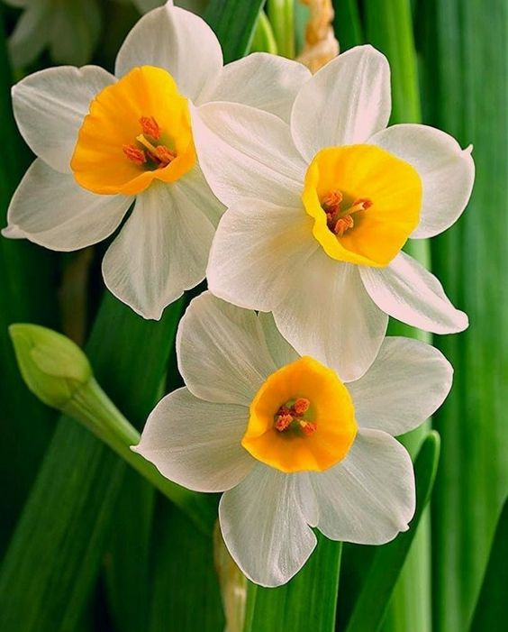 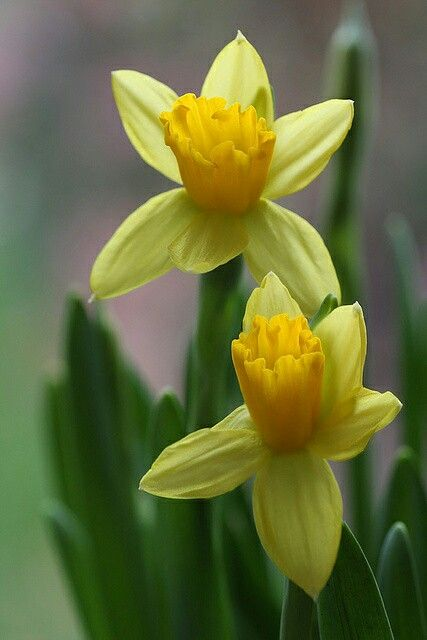 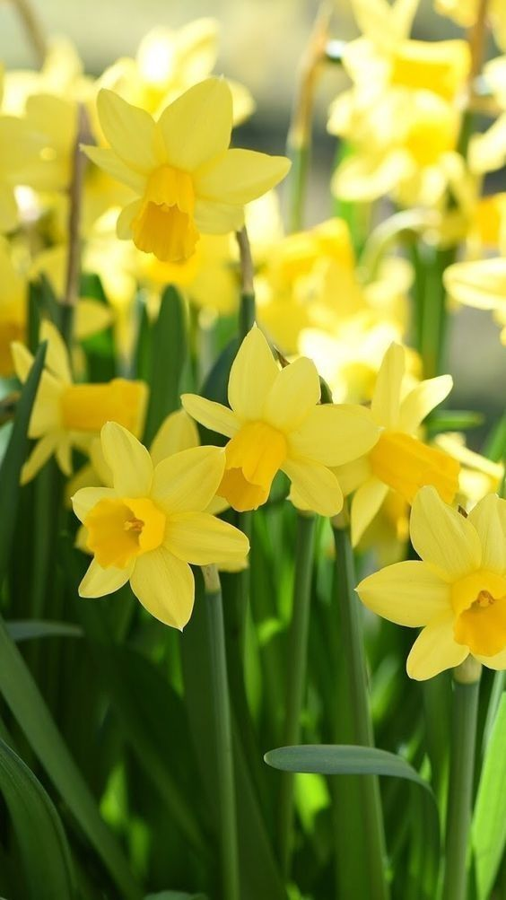2. Vízililiom
gfhdfhgh
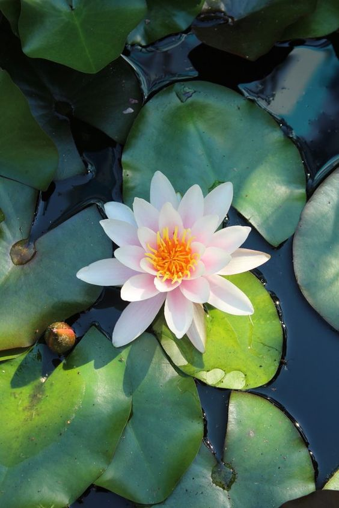 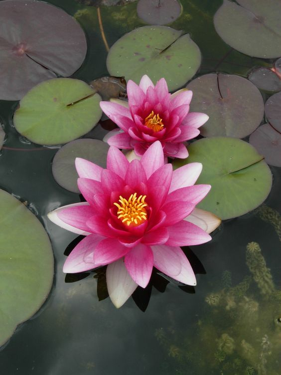 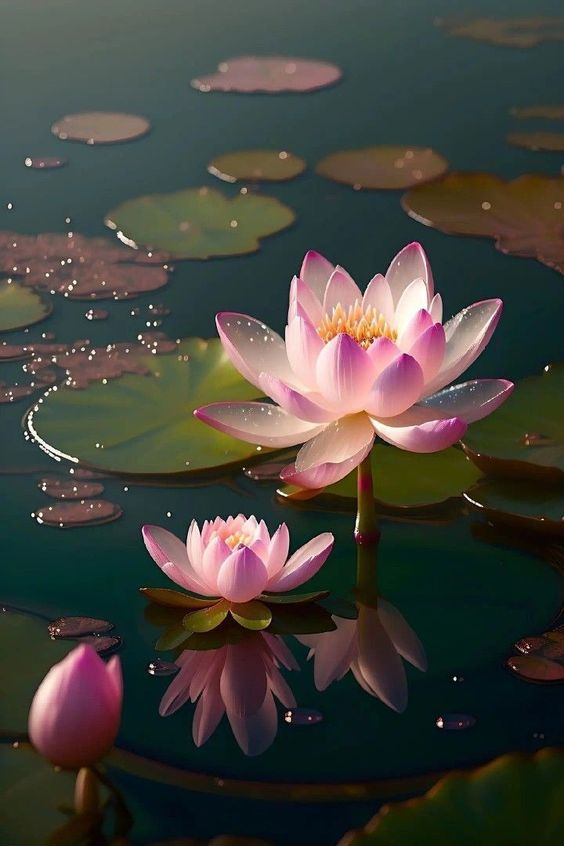3.Napraforgó
gfhdfhgh

 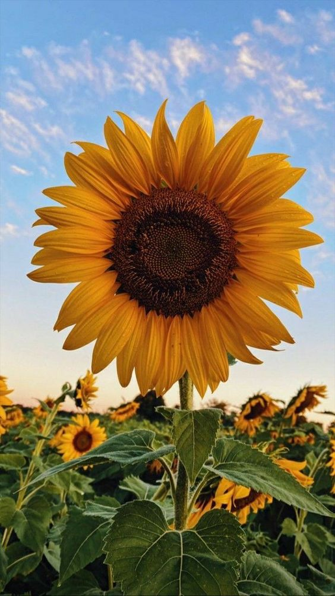
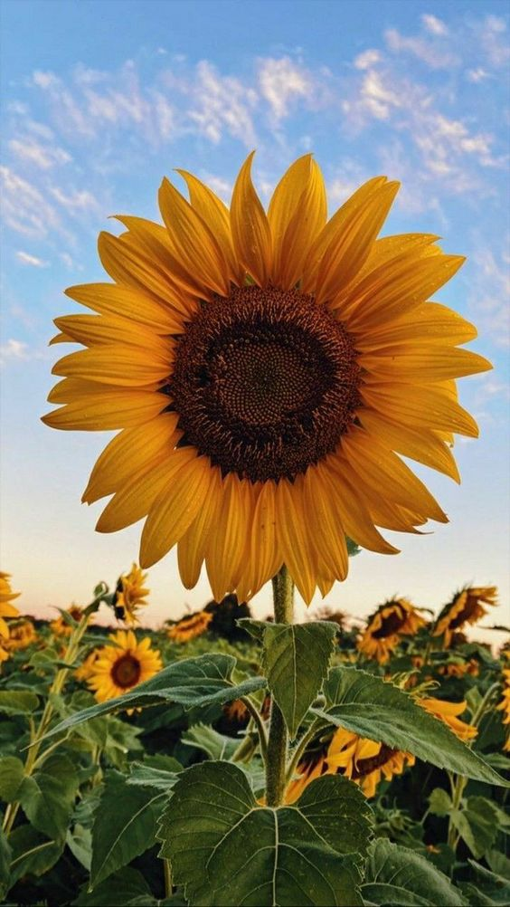
4.Szászorszép
gfhdfhgh
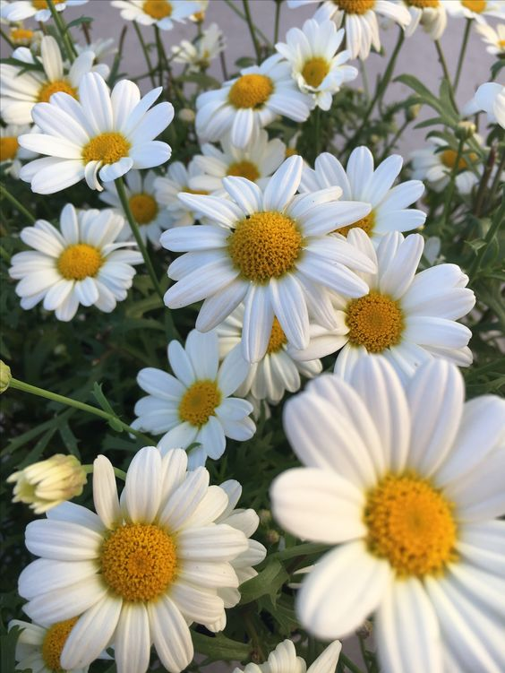 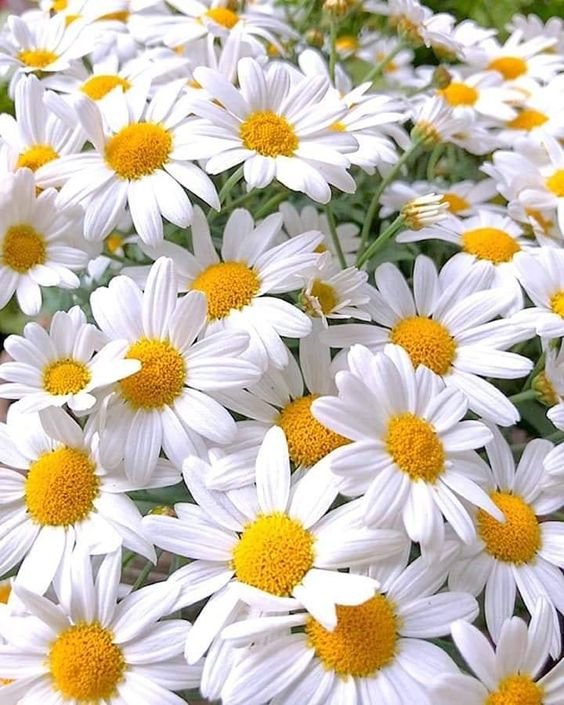 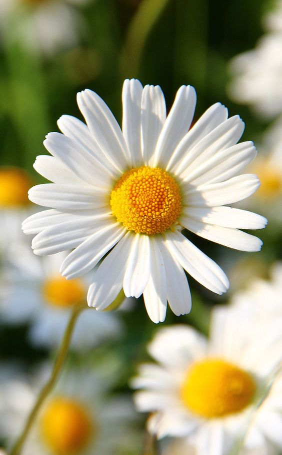